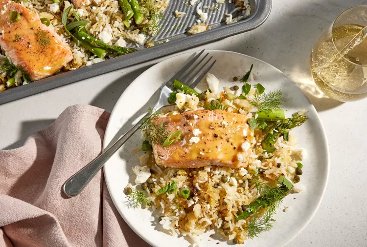

Sheet Pan Salmon And Crispy Rice
Sheet pan dinners are the ultimate solution to quick and easy one-pan meals. In this salmon version, leftover rice is crisped up with scallions, capers, and lemon juice on a hot sheet pan before it’s topped with salmon with a mustard and brown sugar glaze.
Asparagus roasted alongside the salmon makes this a complete meal that only takes 20 minutes of hands-on time. A sprinkle of feta and herbs at the end adds a bit of saltiness and brightness, which pulls the whole dish together. Serve this meal directly from the sheet pan for easy clean up.
Ingredients:
- 1/4 cup neutral cooking oil (such as grapeseed oil or canola oil)
- 6 cups leftover rice (white or brown)
- 1/2 cup sliced scallions (about 5 scallions)
- 1/4 cup drained non-pareil capers
- 1 tablespoon kosher salt, divided
- 1/4 cup fresh lemon juice (from 2 lemons)
- 1/4 cup olive oil, plus more for drizzling
- 2 tablespoons Dijon mustard
- 2 tablespoons light brown sugar
- 4 (6-ounce) skin-on salmon fillets
- 1/4 teaspoon, plus a pinch of black pepper
- 1/2 pound fresh asparagus, trimmed and cut into 1-in. pieces
- 4 ounces feta cheese, crumbled (about 1 cup)
- 1/2 cup finely chopped mixed tender herbs, such as dill, parsley, basil, and tarragon